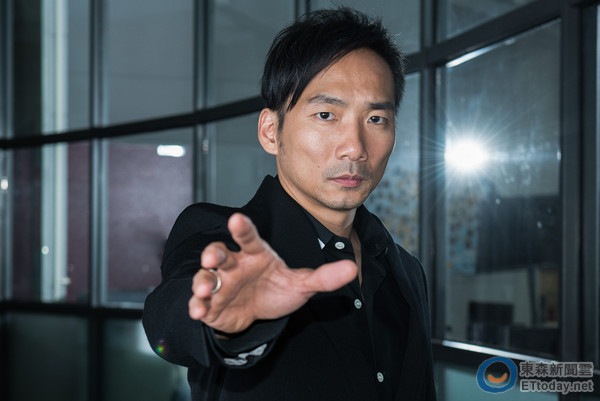

五月天


關於五月天 Mayday
五月天，臺灣樂團，由主唱阿信、團長暨吉他手怪獸、貝斯手瑪莎、吉他手石頭和鼓手冠佑共五人組成；除冠佑外，其餘四人皆畢業自臺北市國立師大附中。樂團前身為「So Band」樂團，於1997年3月29日改為現名，其名稱取自瑪莎在BBS的代號「May-day」。
成員簡介
阿信 Ashin
陳信宏，綽號阿信，是臺灣天團五月天的主唱、知名詞曲創作者、相信音樂股東之一。出生於臺灣臺北市北投區，畢業於國立師大附中美術班，實踐大學室內設計學系肄業。潮流服飾品牌《StayReal》創始人及設計者之一、第五屆公共電視文化事業基金會董事 。榮獲2013年「華人娛樂圈十大傑出青年」第2名 。
怪獸 Monster
溫尚翊，綽號怪獸，出生於臺灣新竹市，畢業於師大附中、國立臺灣大學社會系肄業。臺灣樂團五月天吉他手兼團長，亦是相信音樂股東之一。最崇拜的吉他手是日本知名樂團－B'z的團長兼吉他手的松本孝弘，會開始學吉他，主要也是受到他的影響。目前主要使用的吉他為美國吉他大廠Gibson Custom。
瑪莎 Masa
蔡昇晏，綽號瑪莎，出生於臺灣高雄市，畢業於師大附中、輔仁大學社會系肄業。臺灣樂團五月天的貝斯手，亦是相信音樂股東之一，任陶晶瑩經營網站《姊妹淘》之專欄作家。
冠佑 Ming
劉冠佑，綽號冠佑，出生於臺灣苗栗市，畢業於國光藝校。臺灣樂團五月天的鼓手，亦是相信音樂股東之一。與妻子王行芝共同創立潮流服飾品牌《Drumming 著迷》，2014年底宣布除了服飾亦正式經營複合式餐飲、咖啡。
石頭 Stone
石錦航，綽號石頭，出生於臺灣臺北市，畢業於師大附中、淡江大學水環系肄業。臺灣樂團五月天的吉他手，曾改名「石航瑋」，後使用原名「石錦航」，亦為相信音樂股東之一。